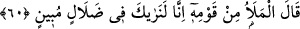
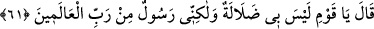
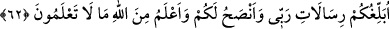

yapılan ibâdetin ibâdetle alâkası yoktur. “Sizin O’ndan başka” ibadete layık “tanrınız
yoktur. Doğrusu ben,” bana emredildiği gibi O’na ibâdet etmezseniz “size büyük bir
günün” kıyamet gününün yahut tûfân gününün “azabın(ın inmesin)den korkuyorum.”
60. Kavminden ileri gelenler dediler ki: Biz seni gerçekten apaçık bir sapıklık
içinde görüyoruz!
Toplantılarda iri cüsseleriyle baş köşeleri, büyüklük ve heybetleriyle kalbleri,
güzellik ve parlaklıklarıyla gözleri dolduran “kavminin ileri gelenleri” yöneticileri ve
eşrâfı “dediler ki”: “Ey Nuh! Bize muhalefetin sebebiyle “biz seni açık bir sapıklık
içinde görüyoruz.” hak ve doğruyoldan sapmış ve sapıklık olduğu besbelli olan bir
dalâlete saplanmış olarak görüyoruz.”
Buradaki “görmek”, gözle değil kalble görmektir.
61. Dedi ki: “Ey kavmim! Bende herhangi bir sapıklık yoktur; fakat ben,
âlemlerin Rabbi tarafından gönderilmiş bir elçiyim.
Nûh (a.s.), kalblerini hakkı kabûle meylettirmek amacıyla onları kendisine izâfe
ederek yumuşak bir tarzda “Dedi ki: “Ey kavmim, bende bir sapıklık yok.” Bu ifâdede
kendisine bir tek sapıklığın bile bulaşmış olması mübâlağa ile reddedilmiştir. Yani
onların sapıklık olduğu apaçık belli olan bir dalâlette karar kıldığımı mübâlağa ile ifâde
ettikleri gibi bende büyük bir delâlet yoktur. Böyle olması bir tarafa bende bir tek
dalâlet veya dalâletin bir kısmı bile yoktur.
“Ben âlemlerin Rabbi tarafından gönderilmiş bir peygamberim.” Sanki şöyle
buyurulmaktadır: “Ben son derece tam bir hidayet üzereyim. Çünkü “ben âlemlerin
Rabbi tarafından gönderilmiş bir peygamberim.”
62. Size Rabbimin vahyettiklerini duyuruyorum, size öğüt veriyorum ve ben sizin
bilmediklerinizi Allah’tan (gelen vahiy ile) biliyorum.
“Size Rabb’imin vahyettiklerini bildiriyorum.”
Risalet, peygamberin zatına bağlı bir sıfat olup hem peygamberi gönderen, hem de